Chapter 2 · Part 2 — Bones
“They don’t have books that tell them about us. They’ll think we’re some enemy and hurl their spears.”
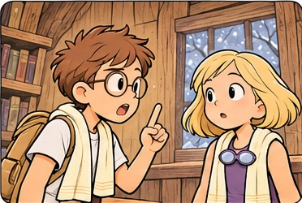
“Yikes,” said Annie.
Jack put his book away.
Squeak. Peanut peeked out of the backpack.
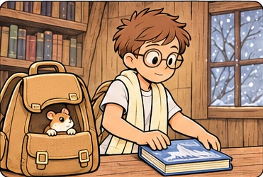
“Stay in there,” said Annie.
Jack pulled on his pack and started down the rope ladder.
Annie followed.
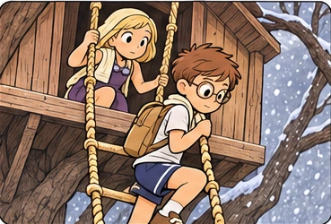
On the icy ground, they huddled together.
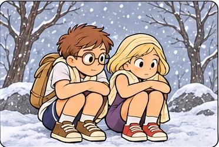
The wind was biting. Jack put his towel over his head. Snow blew against his glasses.
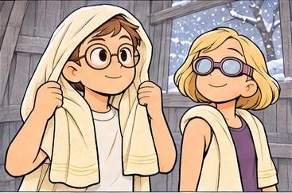
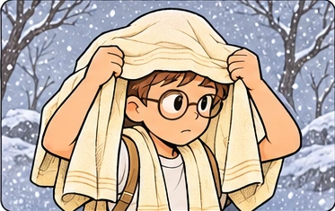
“Hey, Jack,” said Annie. “Look at me.”
Annie had put on her swimming . “Now I can see,” she said.
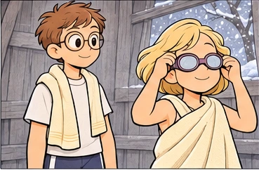
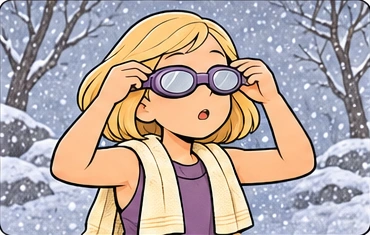
“Good thinking,” said Jack. “Now cover your head with your towel. Most of your body heat is lost through your head.”
Annie wrapped her towel around her head.
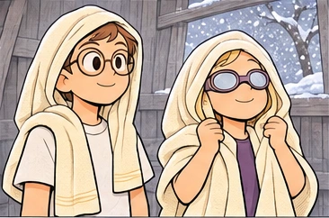
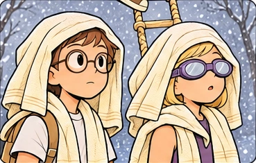
“We should find a cave or someplace warmer,” said Jack.
“I bet there are caves in those cliffs,” said Annie.
She and Jack started across the white plain. The snow wasn’t deep yet. But the wind was blowing hard.
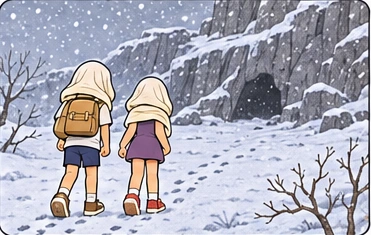
“I told you!” Annie pointed to an opening in the rocks—a cave.
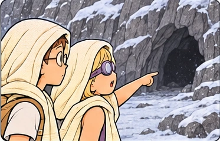
They ran to it.
“Careful,” said Jack. They stepped carefully into the shadowy cave.
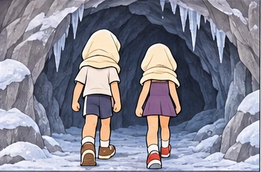
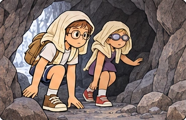
It was only slightly warmer inside. But at least the wind wasn’t blowing.
In the gray light, they stamped the snow off their sneakers.
Annie took off her .
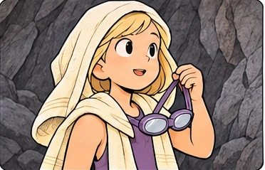
“It smells in here,” said Jack.
“Yeah, like a wet dog,” said Annie.
“Let me see what I can find out,” said Jack.
He pulled out the Ice Age book.
“I’ll look around,” said Annie. “Maybe the M thing is here. Then we can go home and get warm.”
Jack stood by the entrance so he could read the book.
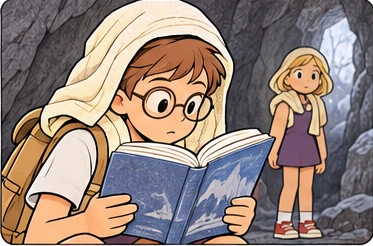
“This cave is filled with sticks,” Annie said.
“What?” said Jack. He didn’t look up from the book.
“No, wait. I think they’re ,” said Annie.
“?” echoed Jack.
“Yeah. Lots of them back here. All over the floor.”
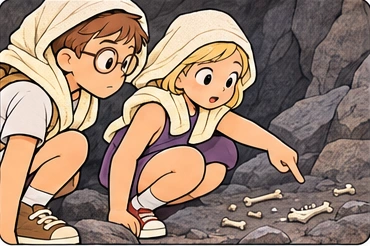
Jack turned the pages of his book. He found a picture of a cave filled with .
“I hear something,” said Annie.
Jack read the writing below the picture of the cave. It said:
The great cave bears of the Ice Age were over eight feet tall. These bears were larger and fiercer than today’s grizzlies. Their caves were filled with the of their ancestors.
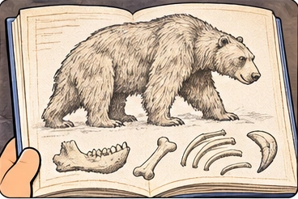
“Annie!” whispered Jack. “Get back here now!”
They were in the cave of a great cave bear!
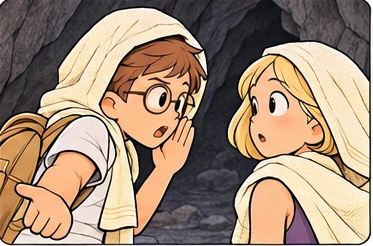